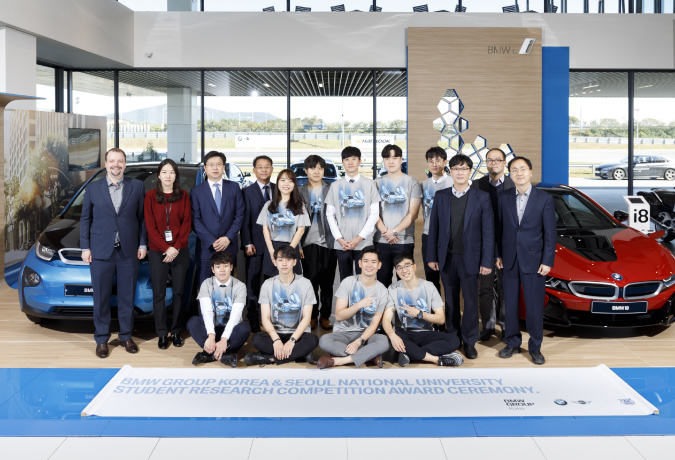
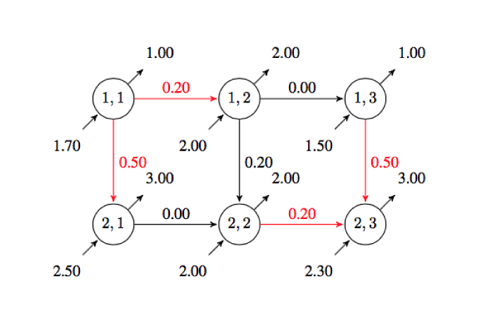

BMW x SNU Research Competition 1st Runner-up
The research project “Optimal Management of Electric Vehicle Charging Stations Using Approximate Dynamic Programming”, conducted by Wonkyung Do and Changsuk Oh, won the 1st runner-up award in BMW x SNU Research Competition. Congratulations! https://eng.snu.ac.kr/node/16457

TAC: Submodularity of Storage Placement Optimization in Power Networks
The paper “ Submodularity of storage placement optimization in power networks ,” authored by Junjie Qin, Insoon Yang and Ram Rajagopal, has been accepted to the IEEE Transactions on Automatic Control . A preliminary version of ...
Submodularity of energy storage placement in power networks
Submodularity of energy storage placement in power networks (Best Student Paper Award finalist). Junjie Qin , Insoon Yang, and Ram Rajagopal. Proceedings of the 55th IEEE Conference on Decision and Control (CDC), pp. 686-693, 2016. ( ...
Safety-aware optimal control of stochastic systems using conditional value-at-risk
Safety-aware optimal control of stochastic systems using conditional value-at-risk. Samantha Samuelson, and Insoon Yang. Proceedings of the 2018 American Control Conference (ACC), pp. 6285-6290, 2018. ( Extended version )